Сервис MirrorПрезентация для заказчиков
Сверяем обещания
работодателя
с реальностью
Оценка HR-бренда снаружи и здоровье корпоративной культуры изнутри. Данные, методика и эксперт, который ведёт до результата.
mirror-com.ru
Сервис MirrorПрезентация для заказчиков
Сервис MirrorО проблеме
Большинство компаний не видят себя со стороны
- Заявленное не совпадает с тем, что видят людиКомпания пишет о себе одно, а кандидаты и сотрудники видят другое. Часто это два разных мира.
- Опросы вовлечённости не показывают причинуМетрики есть, но непонятно, почему они такие и что с ними делать.
- Решения принимаются по ощущениямПо громким историям и мнениям, а не по данным, которые можно проверить.
Сервис MirrorО проблеме
Как это выглядит снаружи
В вакансии написано «гибкий формат», а на Dreamjob кандидат читает «Удалёнку обещали на собеседовании. По факту офис пять дней в неделю».
Обещание, которое не подтверждается, бьёт по доверию сильнее, чем его отсутствие. Кандидат перестаёт верить и остальным словам компании.
Сервис MirrorО проблеме
В результате компании сложнее нанимать, падает доверие сотрудников, растут репутационные риски, и непонятно, с чего начать изменения.
Сервис MirrorПрезентация для заказчиков
Сервис MirrorРешение
Mirror сверяет то, что компания обещает, с тем, что видят кандидаты и переживают сотрудники. Эксперт превращает разрывы в план изменений.
mirror-com.ru
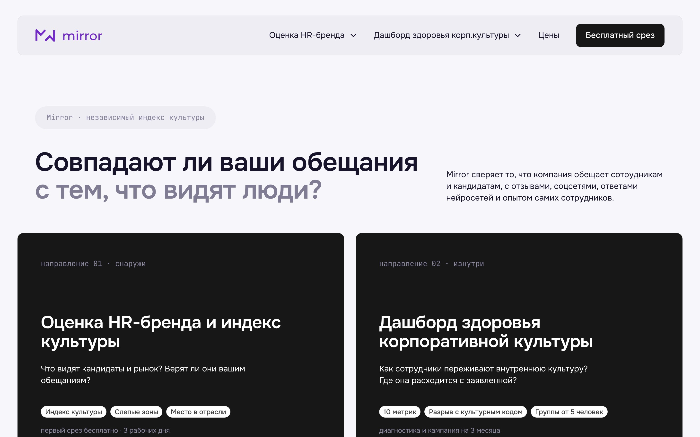
Сервис MirrorРешение
Два направления
направление 01 · снаружи
Оценка HR-бренда и индекс культуры
Что видят кандидаты и рынок. Верят ли вашим обещаниям, о чём люди говорят, а вы молчите, насколько ваши условия хороши по сравнению с отраслью.
Индекс культурыСлепые зоныМесто в отраслиКонкуренты
направление 02 · изнутри
Дашборд здоровья корпоративной культуры
Как сотрудники переживают культуру каждый день. Где опыт людей расходится с культурным кодом и куда направить усилия.
10 метрикРазрыв с кодомГруппы от 5 человекРешения по обратной связи
Показатели направлений не смешиваем в одну цифру: у них разные точки отсчёта. Сверяем темы. Если проблема видна и снаружи, и изнутри, это не шум в отзывах.
Сервис MirrorРешение
Цель Mirror
Помогать компаниям увидеть свою культуру такой, какая она есть. Мы соединяем анализ данных с экспертизой, чтобы найти причины проблем, построить честные отношения между компанией и сотрудниками и запустить изменения изнутри.
Миссия Mirror
Запустить цепную реакцию улучшений: от доверия сотрудников до роста ключевых показателей компании.
Сервис MirrorПрезентация для заказчиков
Сервис MirrorКак это работает
Путь клиента
01
Бесплатный срез
Нужны название компании и ссылка на hh.ru. Доступ к вашим системам не нужен.
3 рабочих дня · 0 ₽
02
Разбор с экспертом
Объясняем цифры, отвечаем на вопросы, вместе решаем, нужен ли следующий шаг.
30 минут · бесплатно
03
Мониторинг или диагностика
Снаружи следим за индексом каждый месяц. Изнутри проводим опрос, интервью и сверку с культурным кодом.
каждый месяц или около 4 недель
04
Кампания на 3 месяца
Три замера, решения по обратной связи для сотрудников, встречи с руководителями и сопровождение изменений.
3 месяца
Сервис MirrorСнаружи · оценка HR-бренда
Ваши обещания против опыта людей
- Что вы обещаетеСобираем обещания из вакансий, карьерного сайта и соцсетей.
- Где проверяемИщем упоминания каждой темы на hh.ru, Dreamjob, в VK, Дзене, медиа и в ответах нейросетей.
- Что получаетеСтатус каждого обещания и индекс культуры одной цифрой.
mirror-com.ru/hr-brand
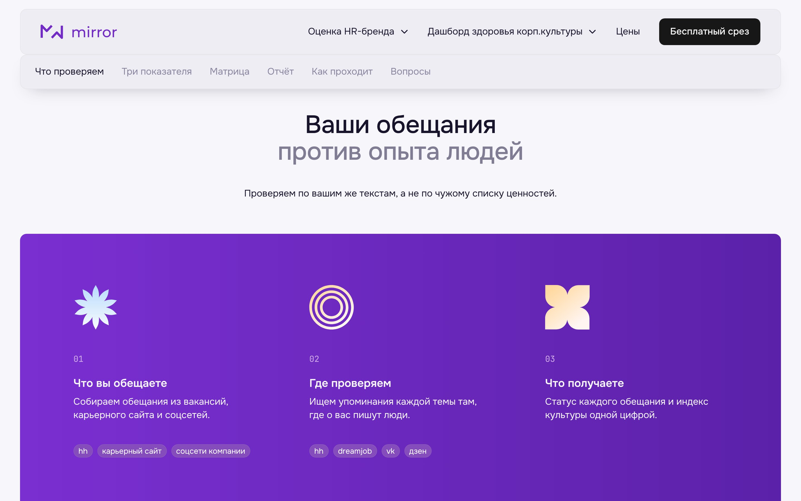
Сервис MirrorСнаружи · оценка HR-бренда
mirror-com.ru/hr-brand
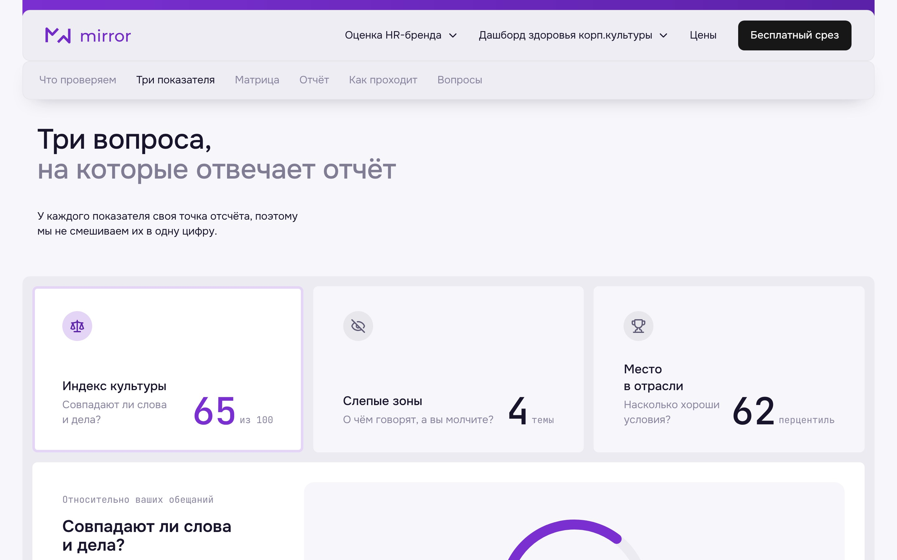
Три показателя
- Индекс культурыСовпадают ли слова и дела: доля обещаний, которые подтверждает опыт людей.
- Слепые зоныО чём люди говорят, а в ваших текстах ни слова. Закрывают лазейку «пообещать поменьше».
- Место в отраслиНасколько хороши условия по сравнению с работодателями вашей отрасли и региона.
Сервис MirrorСнаружи · как считаем
Методика открыта, любой результат можно проверить
Индекс = Σ (вес × % подтверждения) от 0 до 100
Вес обещания равен его доле в ваших текстах. Упоминания до 12 месяцев весят 1, от 12 до 24 месяцев 0,5, старше не учитываем. Для конкурентов правила те же.
Подтверждаетсяот 60% упоминаний
Частичноот 40 до 59%
Не подтверждаетсяменьше 40%
Нет данныхменьше 10 упоминаний
Сервис MirrorСнаружи · пример отчёта
Как выглядит результат
- Четыре числа и три вывода: что работает, где риск, с чего начать.
- Динамика индекса по месяцам с событиями, которые на него повлияли.
- Три первых шага: кто делает и за какой срок.
Пример на условной компании «Банк N»
mirror-com.ru/hr-brand/demo
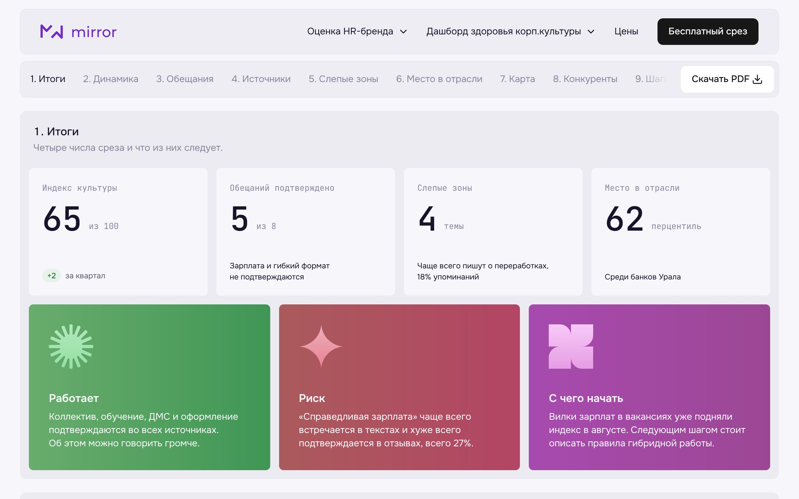
Сервис MirrorСнаружи · пример отчёта
mirror-com.ru/hr-brand/demo
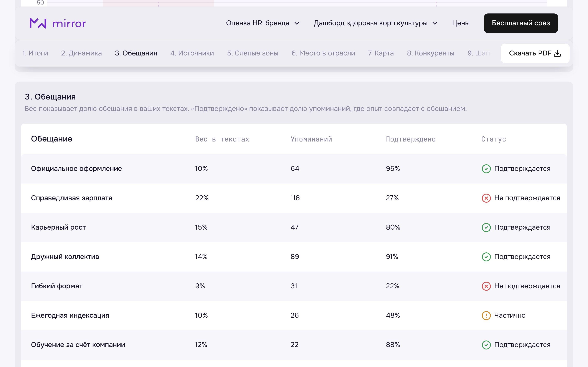
Каждое обещание по отдельности
- Вес обещания в ваших текстах и число упоминаний.
- Доля упоминаний, где опыт людей совпадает с обещанием.
- Сколько баллов индекса теряет каждое обещание. Обычно почти весь недобор даёт одно-два из них.
Сервис MirrorСнаружи · пример отчёта
Честность и условия на одном поле
- Сильный и честныйУсловия выше рынка, обещания подтверждаются. Рассказывайте громче.
- Честно, но слабоОбещания честные, условия хуже рынка. Улучшайте условия.
- Обещаете не тоУсловия хорошие, но в текстах есть то, что не подтверждается.
- ПереобещаетеГлавный риск для доверия.
mirror-com.ru/hr-brand/demo
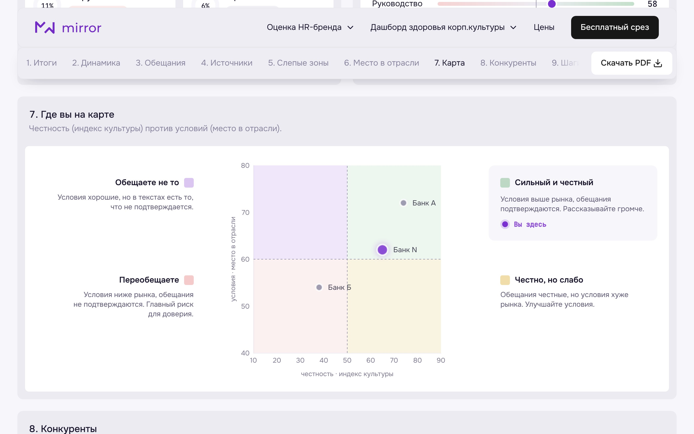
Сервис MirrorИзнутри · здоровье культуры
mirror-com.ru/culture-health
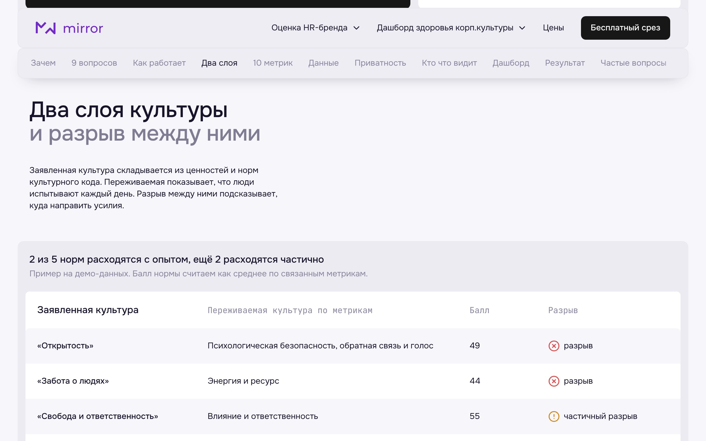
Два слоя культуры и разрыв между ними
- Заявленная культураЦенности и нормы вашего культурного кода.
- Переживаемая культураЧто люди испытывают каждый день, по опросам и текстам.
- РазрывГде норма расходится с опытом и куда направить усилия.
Сервис MirrorИзнутри · здоровье культуры
10 метрик переживаемой культуры
- Ясность смысла, принадлежность, развитие и рост
- Психологическая безопасность, сотрудничество, обратная связь и голос
- Энергия и ресурс, влияние, справедливость, признание
Баллом становятся только опросы и тексты. HR-данные в агрегате подтверждают или опровергают сигнал. У каждого балла видна уверенность данных.
mirror-com.ru/culture-health/demo
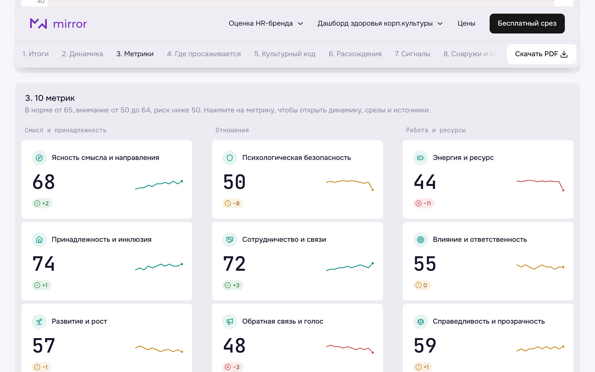
Сервис MirrorИзнутри · приватность
Смотрим на группы, а не на людей
Группы от 5 ответивших
Меньшие группы объединяем с уровнем выше. Сочетания срезов, из которых можно вычислить маленькую группу, тоже скрыты.
Авторов не ищем
Анонимные сообщения не привязываем к подразделениям, цитаты проверяем на узнаваемые детали.
Данные в России
Сырые ответы удаляем в течение 30 дней после проекта. Договор на обработку данных по 152-ФЗ.
Правила одинаковые для всех ролей, включая топ-менеджмент. Дашборд показывает состояние культуры в группах и не используется для оценки людей.
Сервис MirrorЛичный кабинет
Личный кабинет
клиента
Для проверки изнутри всё в одном месте, с доступом по ролям.
- Ход работыНа каком этапе проект и что дальше.
- Что новогоИзменения с прошлого входа.
- Требует вниманияРезкие изменения метрик.
mirror-com.ru/app
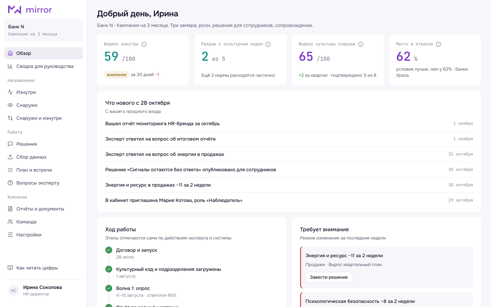
Сервис MirrorЛичный кабинет
Запуск и опрос без лишней переписки
Подготовка к запуску
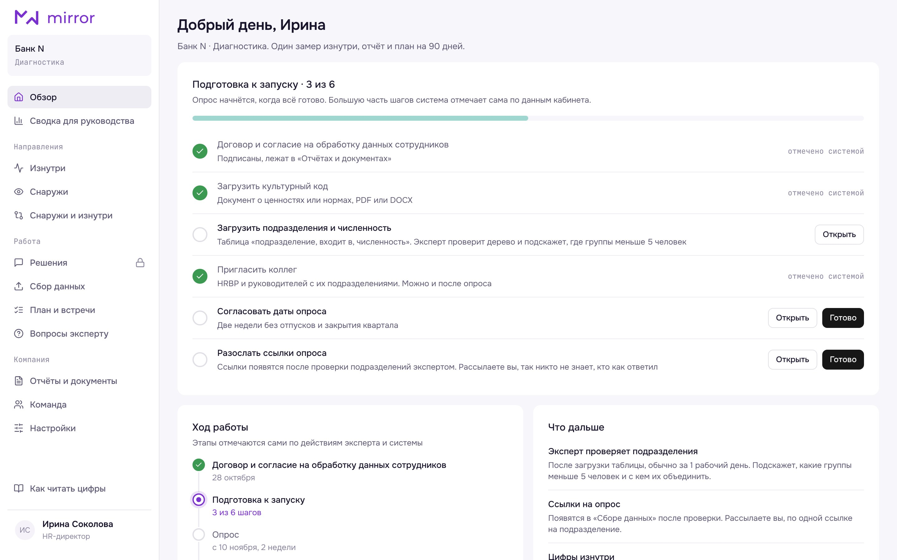
Чек-лист запуска: что загрузить и кого пригласить. Большую часть шагов система отмечает сама.
Ход опроса по подразделениям: видно только, сколько ответили. Где ответов меньше 5, срез будет скрыт.
Сервис MirrorЛичный кабинет
mirror-com.ru/app · изнутри
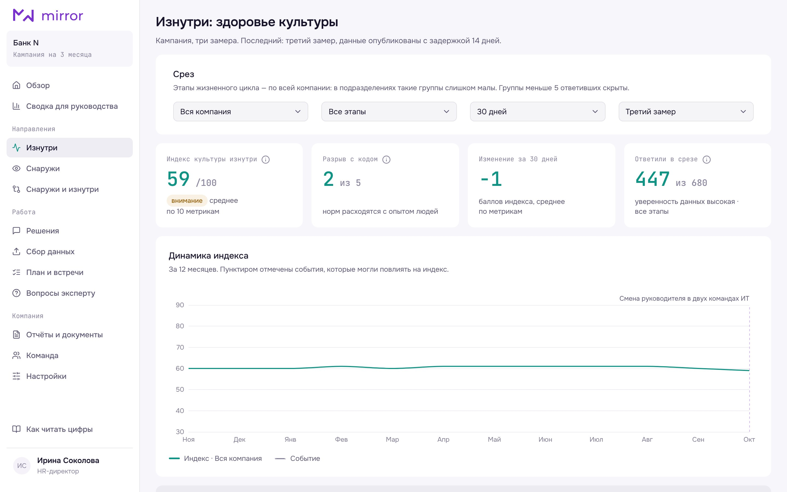
Дашборд на ваших данных
- Срезы по подразделениям, этапам жизненного цикла, периодам и волнам.
- У каждого среза видно, сколько ответили и насколько можно опираться на балл.
- Каждая метрика открывается: динамика, причины, источники.
Сервис MirrorЛичный кабинет
Что изменилось за кампанию
Каждая метрика и индекс по трём замерам. Видно, где стало лучше, а где нужно действовать дальше.
mirror-com.ru/app · волны кампании
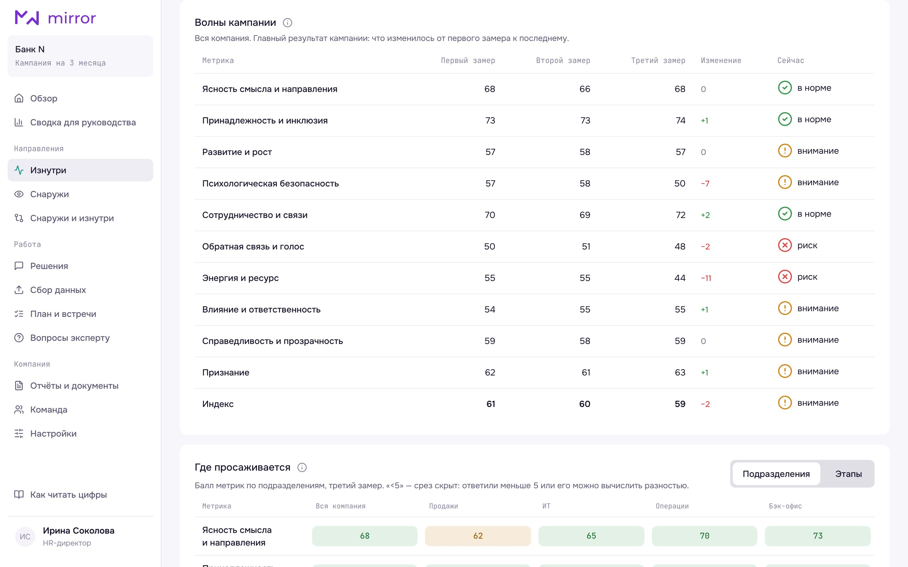
Сервис MirrorЛичный кабинет
mirror-com.ru/app · руководитель
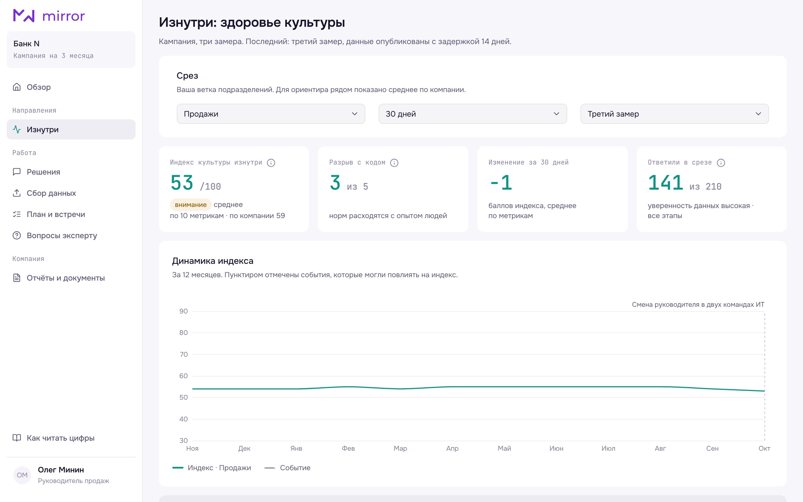
Каждой роли свой срез
- HR-директор и HRBPВсе группы, сигналы, решения и план.
- РуководительСвоя группа от 5 человек и среднее по компании для ориентира.
- Топ-менеджментОбщая картина, разрывы и тренды.
Сервис MirrorЛичный кабинет
Сводка для руководства
Одна страница для первых лиц: индексы, главные разрывы, что изменилось с прошлого замера, решения и их результат.
Без срезов по подразделениям, поэтому её можно показать совету директоров целиком. Раз в месяц приходит письмом.
mirror-com.ru/app · сводка
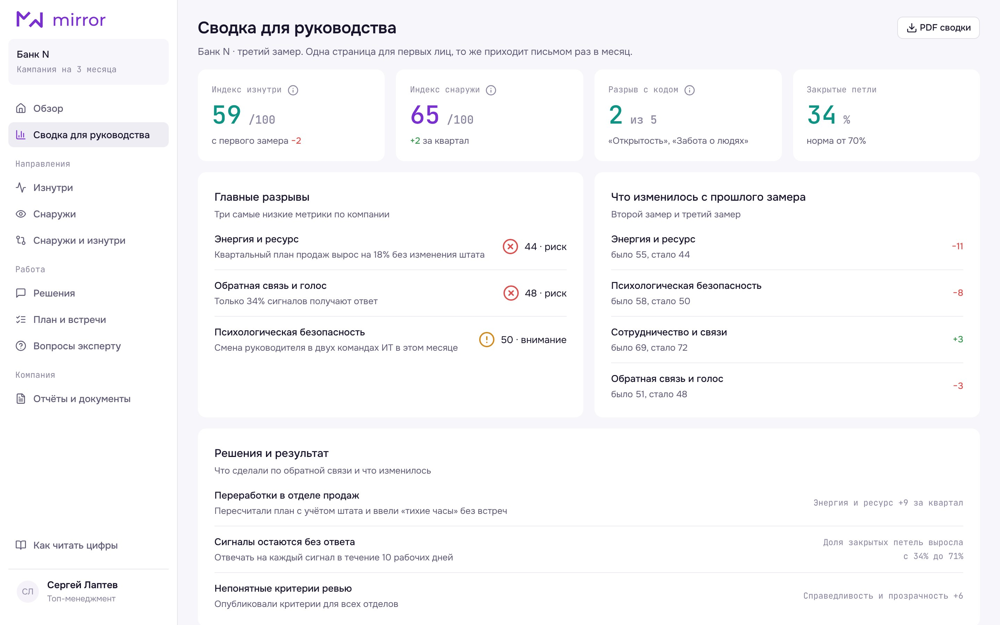
Сервис MirrorЛичный кабинет
mirror-com.ru/app · решения
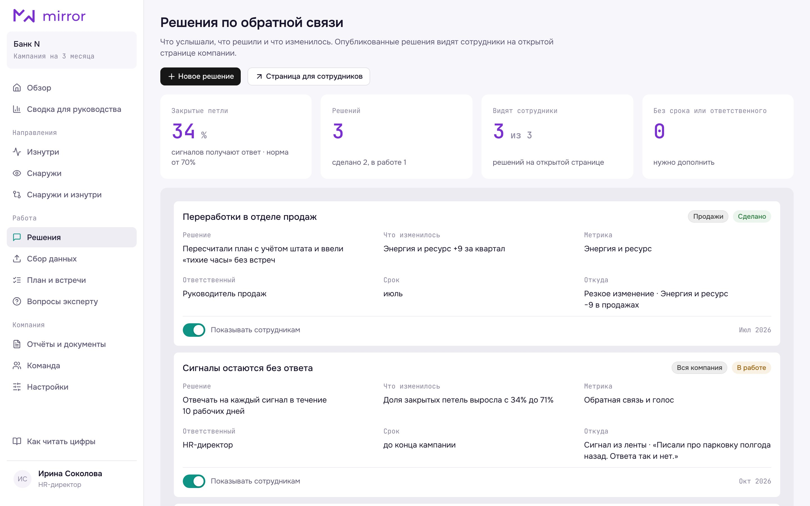
От сигнала к решению
- Решение заводится прямо из сигнала: с ответственным и сроком.
- Доля закрытых петель: сколько сигналов получили ответ.
- Опубликованные решения сотрудники видят на открытой странице. Люди видят, что их услышали.
Сервис MirrorЛичный кабинет
Эксперт на связи
- Вопрос эксперту с привязкой к метрике, отчёту или шагу плана.
- Ответ в течение 2 рабочих дней.
- Запись на встречу в свободное окно эксперта.
mirror-com.ru/app · вопросы эксперту
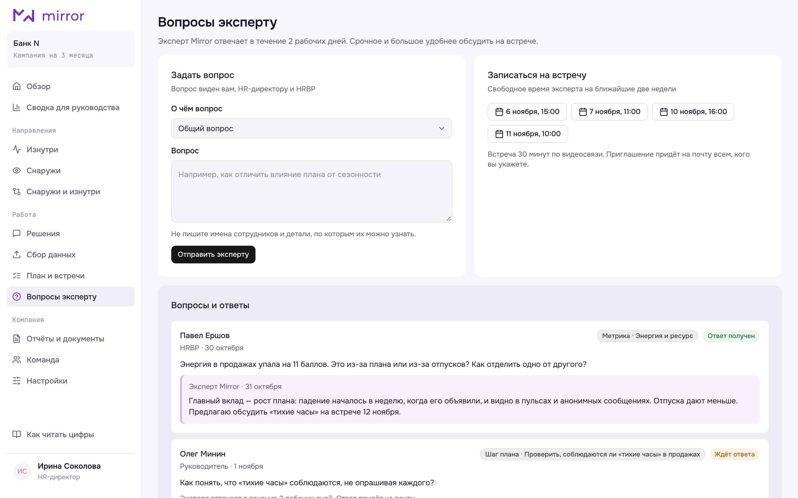
Сервис MirrorКак это работает
Данные, эксперт и внедрение
01 · Анализ данных
Код считает индекс и метрики по открытой методике. ИИ готовит черновик выводов. Цифры не придумываются.
02 · Проверка и план эксперта
Эксперт проверяет цифры и цитаты, изучает ваши документы и пишет план: что делать, кто отвечает, к какому сроку.
03 · Внедрение
Вместе с командой проводим изменения и показываем результат. Решения видят сотрудники.
Сервис MirrorКак это работает
Ключевая ценность Mirror в том, что вы получаете приоритеты действий и индекс культуры, основанный на том, насколько ваши обещания совпадают с реальностью.
Сервис MirrorПрезентация для заказчиков
Сервис MirrorЧто вы получаете
Услуги и цены
снаружи
Внешний срез
0 ₽
3 рабочих дня
- Индекс культуры, слепые зоны, место в отрасли
- 2–3 конкурента
- PDF-отчёт и разбор с экспертом 30 минут
снаружи
Мониторинг
от 110 000 ₽
в месяц · каждый месяц
- Динамика индекса и слепых зон
- Сигнал, если тема резко выросла
- До 5 конкурентов, звонок с экспертом раз в месяц
изнутри
Диагностика
от 250 000 ₽
около 4 недель
- Опрос, до 12 интервью, сверка с культурным кодом
- 10 метрик и разрыв с кодом
- Личный кабинет, отчёт и план на 90 дней
изнутри
Кампания
от 490 000 ₽
3 месяца
- Диагностика уже входит
- Три замера, анонимная обратная связь, решения для сотрудников
- Встречи с руководителями раз в 2 недели
Цена проверки изнутри зависит от численности и числа подразделений и фиксируется в договоре до начала работы.
Сервис MirrorЧто вы получаете
Преимущества Mirror
01 · Открытая методика
Любой результат можно проверить по таблице. Для вас и для конкурентов правила одни.
02 · От анализа к действию
План с ответственными и сроками, а эксперт ведёт до результата.
03 · Снаружи и изнутри
Видно, где проблема заметна с двух сторон, а где сильная сторона, которую стоит показывать громче.
Сервис MirrorПрезентация для заказчиков
Сервис MirrorКому это подойдёт
Mirror для вашей команды
HR-бренд и внутренние коммуникации
Структурированный анализ вместо догадок и понятно, о чём говорить громче.
HR-директора
Язык данных для разговора с топ-менеджментом и выход в зону стратегического влияния.
Руководители подразделений
Срез своей команды, ориентир по компании и конкретные шаги.
Собственники и топ-менеджеры
Риски и точки напряжения до того, как они станут критичными.
Сервис MirrorАвтор идеи
Анастасия Флегантова
Автор идеи Mirror
- 10+ лет опыта в развитии корпоративной культуры, внутренних коммуникаций, PR и HR-брендинге.
- Член Национальной ассоциации экспертов по корпоративным коммуникациям.
- Работала in-house и в консалтинге с компаниями разных отраслей: банки, ритейл, IT, строительство, госкорпорации, производство, медиа.
- Соавтор профильных курсов «Развиваем HR-бренд в эпоху перемен» и «ДНК привлекательного HR-бренда» Академии ПРОвнутриком.
- Победитель и призёр премий InterComm, GRASIAS AWARDS, ВЕКтор развития, Silver Mercury, Bravo, ТОП-50 HR-решений.
- Автор канала о культуре, коммуникациях и HR-бренде «В самую ценность».
- Член жюри профильных премий, спикер профильных конференций и сообществ.
Сервис MirrorКонтакты
Мы не украшаем бренд работодателя. Мы показываем его таким, какой он есть, чтобы вы могли увидеть, принять и изменить то, что действительно важно.
Первый срез бесплатный: 3 рабочих дня, нужна только ссылка на hh.ru